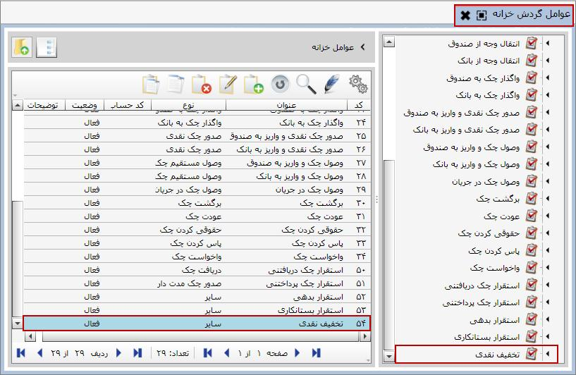
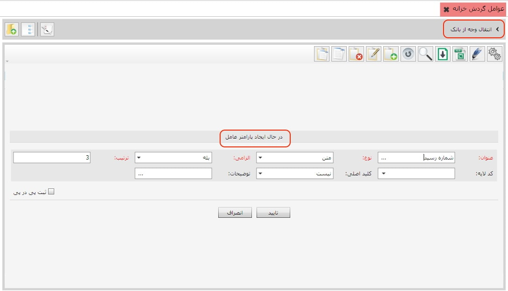
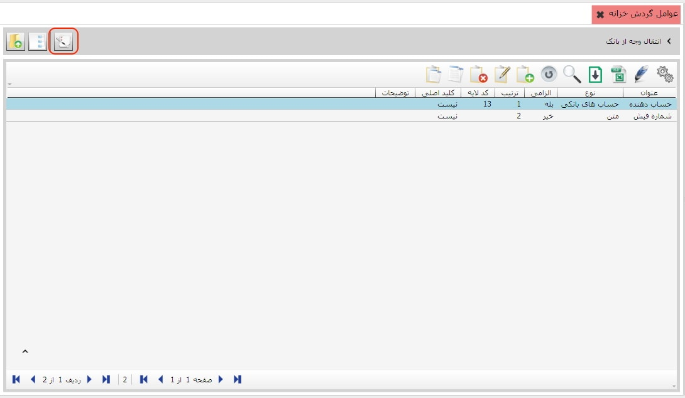
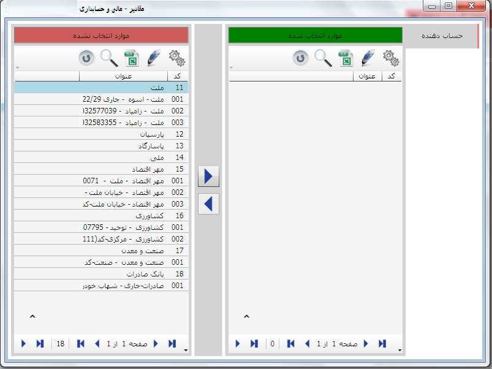

اگر در فیلد کد حساب، حساب معین خاصی را تعیین کرده باشید، در هنگام تعریف
الگوی صدور سند برای عامل مورد نظر می توانید فیلد فرمول را «ارجاع به عامل»
قرار دهید تا برای ثبت سند حسابداری از کد حساب انتخابی شما استفاده شود.
اگر در فیلد کد حساب، حساب معین خاصی را تعیین کرده باشید، در هنگام تعریف
الگوی صدور سند برای عامل مورد نظر می توانید فیلد فرمول را «ارجاع به عامل»
قرار دهید تا برای ثبت سند حسابداری از کد حساب انتخابی شما استفاده شود.
همان طور که قبلا ذکر شد برای صدور سند
خزانه علاوه بر عملیات خزانه نیاز به عوامل گردش خزانه داریم
بنابراین باید عوامل گردش خزانه ایجاد شود و عوامل ایجاد
شده در مرحله بعد به عملیات خزانه تخصیص داده شود. هر عامل
خزانه همزمان می تواند به چند عملیات تخصیص یابد و همچنین
هر عملیات خزانه می تواند شامل چند عامل خزانه باشد. مثلا
عملیات دریافت می تواند دو عامل وجه نقد و چک را شامل باشد.
از منوی اطلاعات پایه و عوامل گردش خزانه ، گزینه
عوامل گردش خزانه را انتخاب نمایید تا پنجره زیر ظاهر شود:
در لیست صفحه ی بالا عناوین عوامل خزانه را همراه با مشخصات آن ها مشاهده می نمایید. شما می توانید بسته به نیاز خود یک یا چند عامل گردش خزانه به لیست فوق اضافه کنید. برای ایجاد یک عامل از نوار ابزار موجود در جدول بالا گزینه اضافه را انتخاب نمایید تا فرم ایجاد عامل خزانه ظاهر شود:

کد اولین عامل به صورت پیش فرض 11 می باشد شما می توانید در حین ایجاد یک عامل کد آن را تعیین کنید ولی پس از ایجاد عامل این کد قابلیت ویرایش را ندارد. در فلید عنوان، عنوان عامل را تایپ نمایید و در فیلد نوع از لیست باز شده نوع عامل را انتخاب کنید. همچنین می توانید برای عامل تعریف شده کد حساب تعیین کنید در غیر این صورت می توانید آن را خالی بگذارید.
اگر در فیلد کد حساب، حساب معین خاصی را تعیین کرده باشید، در هنگام تعریف
الگوی صدور سند برای عامل مورد نظر می توانید فیلد فرمول را «ارجاع به عامل»
قرار دهید تا برای ثبت سند حسابداری از کد حساب انتخابی شما استفاده شود.
در شکل بالا نحوه ی ایجاد عامل تخفیف نقدی نمایش داده شده است، با تکمیل فرم مربوط به ایجاد عامل خزانه و تایید آن می توانید عامل جدید را در بین عوامل گردش خزانه مشاهده نمایید:
همان گونه که هر عملیات می تواند چندین پارامتر داشته باشد برای هر عامل نیز می توان چندین پارامتر تعریف کرد. اگر از لیست عوامل گردش خزانه نام عامل را انتخاب کنیم با دبل کلیک روی آن پارامتر های آن عامل ظاهر می شود:
همچنین می توانید برای عامل دلخواه پارامتر جدید ایجاد کنید. برای این کار از نوار ابزار گزینه اضافه را بزنید تا فرم ایجاد پارامتر عامل نمایش داده شود:
در شکل بالا می خواهیم پارامتر شماره رسید را برای عامل واریز وجه از بانک ایجاد کنیم. با زدن گزینه تایید می توانید پارامتر ایجاد شده را در لیست پارامتر های عامل مورد نظر مشاهده کنید.
پس از تعریف پارمترهای عوامل برای پارمتر هایی که نوع آن ها شخص، حساب های بانکی و یا صندوق می باشد باید گروه های مرتبط را تخصیص دهیم برای این کار می توانید با استفاده از دکمه مقادیر موارد مورد نیاز را تخصیص دهید. شکل های زیر این مراحل را نشان میدهد.
سپس گروه های تعریف شده را از قسمت موارد انتخاب نشده به قسمت موارد انتخاب شده انتقال دهید.

 توجه داشته باشید ابتدا باید برای اشخاص در منوهای تعریف گروه های اشخاص
و مدیریت اشخاص گروه مورد نظر را تعریف کنید و برای حساب های
بانکی و صندوق ها ابتدا باید در قسمت اطلاعات پایه و مشترک
در منو های تعریف حساب های بانکی و تعریف صندوق ها تعریف گردند.
توجه داشته باشید ابتدا باید برای اشخاص در منوهای تعریف گروه های اشخاص
و مدیریت اشخاص گروه مورد نظر را تعریف کنید و برای حساب های
بانکی و صندوق ها ابتدا باید در قسمت اطلاعات پایه و مشترک
در منو های تعریف حساب های بانکی و تعریف صندوق ها تعریف گردند.
فرم ایجاد پارامتر عامل فاقد فیلد عرض می باشد زیرا پارامتر عامل
بر خلاف پارامتر عملیات در ستون سند خزانه نمایش داده نمی شود بلکه
مقدار آن در فرم صدور سند خزانه در پنجره ای جداگانه تعیین می شود.